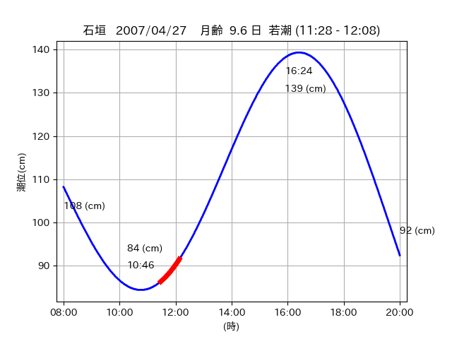

<!DOCTYPE html>
<html>
<head>
    
    <meta http-equiv="content-type" content="text/html; charset=UTF-8" />
    
        <script>
            L_NO_TOUCH = false;
            L_DISABLE_3D = false;
        </script>
    
    <style>html, body {width: 100%;height: 100%;margin: 0;padding: 0;}</style>
    <style>#map {position:absolute;top:0;bottom:0;right:0;left:0;}</style>
    <script src="https://cdn.jsdelivr.net/npm/leaflet@1.9.3/dist/leaflet.js"></script>
    <script src="https://code.jquery.com/jquery-3.7.1.min.js"></script>
    <script src="https://cdn.jsdelivr.net/npm/bootstrap@5.2.2/dist/js/bootstrap.bundle.min.js"></script>
    <script src="https://cdnjs.cloudflare.com/ajax/libs/Leaflet.awesome-markers/2.0.2/leaflet.awesome-markers.js"></script>
    <link rel="stylesheet" href="https://cdn.jsdelivr.net/npm/leaflet@1.9.3/dist/leaflet.css"/>
    <link rel="stylesheet" href="https://cdn.jsdelivr.net/npm/bootstrap@5.2.2/dist/css/bootstrap.min.css"/>
    <link rel="stylesheet" href="https://netdna.bootstrapcdn.com/bootstrap/3.0.0/css/bootstrap-glyphicons.css"/>
    <link rel="stylesheet" href="https://cdn.jsdelivr.net/npm/@fortawesome/fontawesome-free@6.2.0/css/all.min.css"/>
    <link rel="stylesheet" href="https://cdnjs.cloudflare.com/ajax/libs/Leaflet.awesome-markers/2.0.2/leaflet.awesome-markers.css"/>
    <link rel="stylesheet" href="https://cdn.jsdelivr.net/gh/python-visualization/folium/folium/templates/leaflet.awesome.rotate.min.css"/>
    
            <meta name="viewport" content="width=device-width,
                initial-scale=1.0, maximum-scale=1.0, user-scalable=no" />
            <style>
                #map_12e7e90989bca0b1358554b084b83e2d {
                    position: relative;
                    width: 2048.0px;
                    height: 1600.0px;
                    left: 0.0%;
                    top: 0.0%;
                }
                .leaflet-container { font-size: 1rem; }
            </style>
        
</head>
<body>
    
    
            <div class="folium-map" id="map_12e7e90989bca0b1358554b084b83e2d" ></div>
        
</body>
<script>
    
    
            var map_12e7e90989bca0b1358554b084b83e2d = L.map(
                "map_12e7e90989bca0b1358554b084b83e2d",
                {
                    center: [24.383, 123.938],
                    crs: L.CRS.EPSG3857,
                    ...{
  "zoom": 12,
  "zoomControl": true,
  "preferCanvas": false,
}

                }
            );

            

        
    
            var tile_layer_5729781512c1b4c15295241c43073b10 = L.tileLayer(
                "https://cyberjapandata.gsi.go.jp/xyz/seamlessphoto/{z}/{x}/{y}.jpg",
                {
  "minZoom": 0,
  "maxZoom": 18,
  "maxNativeZoom": 18,
  "noWrap": false,
  "attribution": "\u5730\u7406\u9662\u5730\u56f3",
  "subdomains": "abc",
  "detectRetina": false,
  "tms": false,
  "opacity": 1,
}

            );
        
    
            tile_layer_5729781512c1b4c15295241c43073b10.addTo(map_12e7e90989bca0b1358554b084b83e2d);
        
    
            var marker_3a91e1064a7570394e68ff6705c59abe = L.marker(
                [24.3726, 123.9502],
                {
}
            ).addTo(map_12e7e90989bca0b1358554b084b83e2d);
        
    
            var icon_4fd7f2d81b508d2c501a2eb329846fff = L.AwesomeMarkers.icon(
                {
  "markerColor": "orange",
  "iconColor": "white",
  "icon": "info-sign",
  "prefix": "glyphicon",
  "extraClasses": "fa-rotate-0",
}
            );
        
    
        var popup_a4bbc0df478cc2cbc88284b2f52bd490 = L.popup({
  "maxWidth": "100%",
});

        
            
                var html_9c01a674d57ecb3de1c798a48144b4b7 = $(`<div id="html_9c01a674d57ecb3de1c798a48144b4b7" style="width: 100.0%; height: 100.0%;"><table><tr><td></td></tr><tr><td><center>20070427 No.1 </center></table></td></tr></table</div>`)[0];
                popup_a4bbc0df478cc2cbc88284b2f52bd490.setContent(html_9c01a674d57ecb3de1c798a48144b4b7);
            
        

        marker_3a91e1064a7570394e68ff6705c59abe.bindPopup(popup_a4bbc0df478cc2cbc88284b2f52bd490)
        ;

        
    
    
                marker_3a91e1064a7570394e68ff6705c59abe.setIcon(icon_4fd7f2d81b508d2c501a2eb329846fff);
            
    
            var poly_line_83e74a7715ce92ebeaef8de6698a0f38 = L.polyline(
                [[24.3726, 123.9502], [24.3705, 123.9536]],
                {"bubblingMouseEvents": true, "color": "#00FFFF", "dashArray": null, "dashOffset": null, "fill": false, "fillColor": "#00FFFF", "fillOpacity": 0.2, "fillRule": "evenodd", "lineCap": "round", "lineJoin": "round", "noClip": false, "opacity": 1.0, "smoothFactor": 1.0, "stroke": true, "weight": 3}
            ).addTo(map_12e7e90989bca0b1358554b084b83e2d);
        
    
            var marker_c3e9b1ef2a6867a64c71a6e3e4ebaffa = L.marker(
                [24.3715, 123.9515],
                {
}
            ).addTo(map_12e7e90989bca0b1358554b084b83e2d);
        
    
            var icon_4b55f679630e4a43275159b3bbc84ac6 = L.AwesomeMarkers.icon(
                {
  "markerColor": "orange",
  "iconColor": "white",
  "icon": "info-sign",
  "prefix": "glyphicon",
  "extraClasses": "fa-rotate-0",
}
            );
        
    
        var popup_8549a9183c62e720dd34211c1e4d56ed = L.popup({
  "maxWidth": "100%",
});

        
            
                var html_4cd8bd25882b5f4ea76c26a8ec619a79 = $(`<div id="html_4cd8bd25882b5f4ea76c26a8ec619a79" style="width: 100.0%; height: 100.0%;"><table><tr><td></td></tr><tr><td><center>20070427 No.2 </center></table></td></tr></table</div>`)[0];
                popup_8549a9183c62e720dd34211c1e4d56ed.setContent(html_4cd8bd25882b5f4ea76c26a8ec619a79);
            
        

        marker_c3e9b1ef2a6867a64c71a6e3e4ebaffa.bindPopup(popup_8549a9183c62e720dd34211c1e4d56ed)
        ;

        
    
    
                marker_c3e9b1ef2a6867a64c71a6e3e4ebaffa.setIcon(icon_4b55f679630e4a43275159b3bbc84ac6);
            
    
            var poly_line_303398205f64cdedcc48958cb5a01aeb = L.polyline(
                [[24.3715, 123.9515], [24.3687, 123.9527]],
                {"bubblingMouseEvents": true, "color": "#00FFFF", "dashArray": null, "dashOffset": null, "fill": false, "fillColor": "#00FFFF", "fillOpacity": 0.2, "fillRule": "evenodd", "lineCap": "round", "lineJoin": "round", "noClip": false, "opacity": 1.0, "smoothFactor": 1.0, "stroke": true, "weight": 3}
            ).addTo(map_12e7e90989bca0b1358554b084b83e2d);
        
    
            var marker_1878269aa825de226fa050b07e25ae3b = L.marker(
                [24.3835, 123.9367],
                {
}
            ).addTo(map_12e7e90989bca0b1358554b084b83e2d);
        
    
            var icon_2071e8b6f145f13a501b4583128c80ca = L.AwesomeMarkers.icon(
                {
  "markerColor": "orange",
  "iconColor": "white",
  "icon": "info-sign",
  "prefix": "glyphicon",
  "extraClasses": "fa-rotate-0",
}
            );
        
    
        var popup_c4a3f5846b9a38013aa30bc35bf4ce0e = L.popup({
  "maxWidth": "100%",
});

        
            
                var html_aba103a4ef1283eec16b66029e8c3dd2 = $(`<div id="html_aba103a4ef1283eec16b66029e8c3dd2" style="width: 100.0%; height: 100.0%;"><table><tr><td></td></tr><tr><td><center>20070427 No.3 </center></table></td></tr></table</div>`)[0];
                popup_c4a3f5846b9a38013aa30bc35bf4ce0e.setContent(html_aba103a4ef1283eec16b66029e8c3dd2);
            
        

        marker_1878269aa825de226fa050b07e25ae3b.bindPopup(popup_c4a3f5846b9a38013aa30bc35bf4ce0e)
        ;

        
    
    
                marker_1878269aa825de226fa050b07e25ae3b.setIcon(icon_2071e8b6f145f13a501b4583128c80ca);
            
    
            var poly_line_c23a4c60610f27987b47450c89929751 = L.polyline(
                [[24.3835, 123.9367], [24.3827, 123.9387]],
                {"bubblingMouseEvents": true, "color": "#00FFFF", "dashArray": null, "dashOffset": null, "fill": false, "fillColor": "#00FFFF", "fillOpacity": 0.2, "fillRule": "evenodd", "lineCap": "round", "lineJoin": "round", "noClip": false, "opacity": 1.0, "smoothFactor": 1.0, "stroke": true, "weight": 3}
            ).addTo(map_12e7e90989bca0b1358554b084b83e2d);
        
</script>
</html>